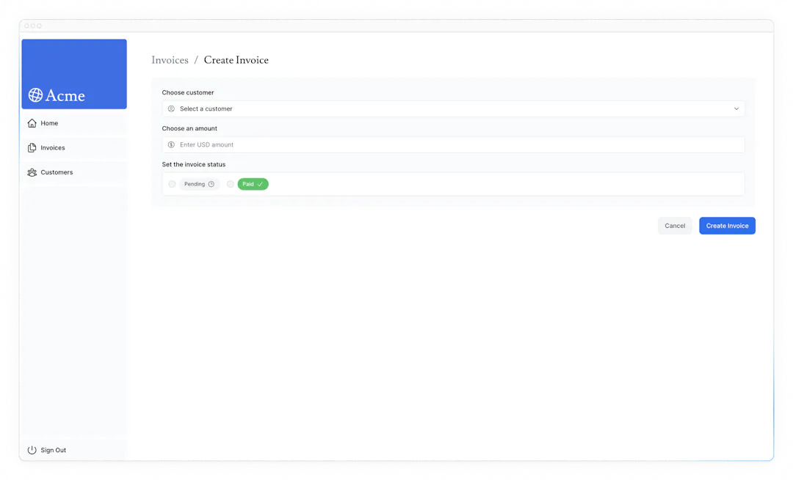
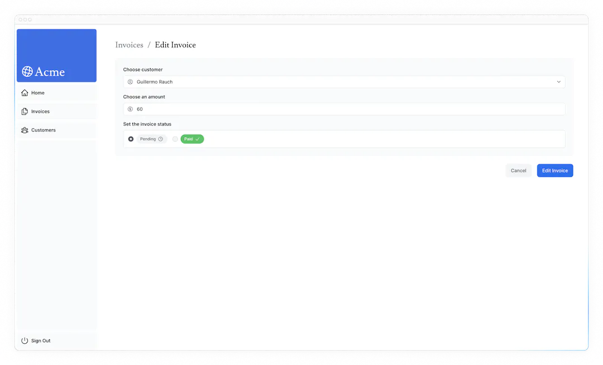

12データのミューテーション
前の章では、URL Search ParamsとNext.js APIを使って検索とページネーションを実装しました。請求書を作成、更新、削除する機能を追加して、請求書ページの作業を続けましょう！
この章では...
この章で取り上げるトピックは以下の通りです。
- React Server Actionsとは何か、そしてそれを使ってデータを変更する方法。
- フォームとサーバーコンポーネントの扱い方
- ネイティブのformDataオブジェクトを扱うためのベストプラクティス。
- revalidatePath API を使用してクライアントキャッシュを再検証する方法。
- 特定の ID を持つ動的なルートセグメントを作成する方法
- React の useFormStatus フックを使用して楽観的な更新を行う方法。
Warning
この章では、Next.js 18.11 以上のバージョンが必要です。
Server Action とは？
React Server Actionsを使用すると、非同期コードをサーバー上で直接実行できます。これにより、データを変更するためのAPIエンドポイントを作成する必要がなくなります。代わりに、サーバー上で実行される非同期関数を記述し、クライアントまたはサーバーコンポーネントから呼び出すことができます。
Webアプリケーションは様々な脅威にさらされやすいため、セキュリティは最優先事項です。そこでサーバーアクションの出番です。サーバーアクションは効果的なセキュリティソリューションを提供し、さまざまなタイプの攻撃から保護し、データを保護し、許可されたアクセスを保証します。Server Actionsは、POSTリクエスト、暗号化されたクロージャ、厳密な入力チェック、エラーメッセージのハッシュ化、ホストの制限などの技術によってこれを実現し、これらすべてが連携してアプリの安全性を大幅に高めます。
サーバー・アクションでフォームを使う
React では、<form>要素の action 属性を使用してアクションを呼び出すことができます。アクションは自動的に、取り込まれたデータを含むネイティブの FormData オブジェクトを受け取ります。
例えば
サーバーコンポーネント内でサーバーアクションを呼び出す利点として、プログレッシブエンハンスメントが挙げられます。クライアントでJavaScriptが無効になっている場合でもフォームが機能します。
Next.jsとサーバーアクション
サーバーアクションもNext.jsのキャッシュと深く統合されています。サーバーアクションでフォームが送信されると、アクションを使用してデータを変更できるだけでなく、revalidatePathやrevalidateTagなどの API を使用して、関連するキャッシュを再検証することもできます。
ここでクイズです
サーバー・アクションを使うメリットは何ですか？
- SEOの改善。
- プログレッシブ・エンハンスメント。
- ウェブサイトの高速化。
- データ暗号化。
答え
"2. プログレッシブ・エンハンスメント。"
その通りです！これによって、フォームのJavaScriptがまだ読み込まれていなかったり、読み込みに失敗したりしても、ユーザーがフォームを操作してデータを送信できるようになります。
それがどのように機能するか見てみましょう！
請求書の作成
新しい請求書を作成する手順は以下の通りです：
- ユーザーの入力を取り込むフォームを作成します。
- Server Action を作成し、フォームから呼び出します。
- Server Action 内で、formData オブジェクトからデータを抽出します。
- データを検証し、データベースに挿入する準備をします。
- データを挿入し、エラーを処理します。
- キャッシュを再検証し、ユーザーを請求書ページにリダイレクトします。
1. 新しいルートとフォームを作成する
まず、/invoicesフォルダの中に、/createという新しいルートセグメントとpage.tsxファイルを追加します：
このルートで新しい請求書を作成します。page.tsxファイルの中に、以下のコードを貼り付けてください：
あなたのページは、顧客をフェッチして<Form>コンポーネントに渡すServer Componentです。時間を節約するために、すでに<Form>コンポーネントを作成してあります。
<Form>コンポーネントに移動すると、フォームが表示されます：
- 顧客のリストを表示する
<select>ドロップダウン）要素が1つあります。 type="number"の金額用の<input>要素が1つあります。type="radio"の<input>要素が2つあります。type="submit"のボタンが1つあります。
http://localhost:3000/dashboard/invoices/createにアクセスすると、以下のUIが表示されるはずです：

2. サーバーアクションの作成
それでは、フォームが送信されたときに呼び出されるサーバーアクションを作成しましょう。
libディレクトリに移動し、actions.tsという名前の新しいファイルを作成します。このファイルの先頭に、React use server ディレクティブを追加します：
| app/lib/actions.ts | |
|---|---|
'use server'を追加することで、ファイル内にエクスポートされたすべての関数をサーバー関数としてマークすることができます。これらのサーバー関数は、クライアントコンポーネントやサーバーコンポーネントにインポートすることができます。
また、サーバーコンポーネントの中に直接サーバーアクションを記述することもできます。しかし、このコースでは、これらをすべて別のファイルに整理しておきます。
actions.tsファイルに、formDataを受け取る新しい非同期関数を作成します：
次に、<form>コンポーネントに、actions.tsファイルからcreateInvoiceをインポートします。<form>要素にaction属性を追加し、createInvoiceアクションを呼び出します。
TIPS
HTMLでは、action属性にURLを渡します。このURLはフォームデータの送信先（通常はAPIエンドポイント）になります。
しかしReactでは、action属性は特別なpropとみなされます。つまり、Reactはアクションを呼び出すことができるように、action属性の上に構築します。
裏では、Server ActionsはPOST APIエンドポイントを作成します。これが、Server Actionsを使用する際にAPIエンドポイントを手動で作成する必要がない理由です。
3. formDataからデータを取り出す
actions.tsファイルに戻り、formDataの値を抽出する必要がありますが、使用できるメソッドがいくつかあります。この例では、.get(name)メソッドを使います。
| app/lib/actions.ts | |
|---|---|
TIPS
多数のフィールドを持つフォームを扱う場合は、JavaScript のObject.fromEntries()を使用してentries()メソッドを使用することをお勧めします。
例: const rawFormData = Object.fromEntries(formData.entries())
すべてが正しく接続されていることを確認するために、先に進んでフォームを試してみてください。送信後、フォームに入力したデータがターミナルに記録されるはずです。
データがオブジェクトの形になったことで、作業がより簡単になります。
4.データの検証と準備
フォームデータをデータベースに送信する前に、正しいフォーマットと正しいデータ型であることを確認します。コースの前半で、請求書テーブルが次のような形式のデータを想定していることを思い出してください：
| app/lib/definitions.ts | |
|---|---|
今のところ、フォームから得られるのは customer_id、amount、statusだけです。
型の検証と強制
フォームからのデータがデータベースで期待される型と一致していることを検証することは重要です。例えば、アクションの中にconsole.logを追加するとします：
amountが数値型ではなく文字列型であることにお気づきでしょう。これは、type="number"の入力要素は、実際には数値ではなく文字列を返すからです！
型検証を処理するには、いくつかの選択肢があります。手作業で型を検証することもできますが、型検証ライブラリを使えば時間と労力を節約できます。この例では、TypeScriptファーストの検証ライブラリであるZodを使用します。
actions.tsファイルでZodをインポートし、フォームオブジェクトの形に合ったスキーマを定義します。このスキーマは、データベースに保存する前にformDataを検証します。
amountフィールドは、文字列から数値に強制（変更）されるように特別に設定されており、同時にその型も検証されます。
その後、rawFormDataをCreateInvoiceに渡して型を検証することができます：
| app/lib/actions.ts | |
|---|---|
セント単位での値の保存
JavaScriptの浮動小数点エラーを排除し、より高い精度を確保するために、通常、データベース内の通貨値をセントで格納することは良い習慣です。
金額をセントに変換してみましょう：
| app/lib/actions.ts | |
|---|---|
新しい日付の作成
最後に、請求書の作成日としてYYYY-MM-DDのフォーマットで新しい日付を作成してみましょう：
5.データベースにデータを挿入する
データベースに必要な値がすべて揃ったので、新しい請求書をデータベースに挿入するSQLクエリを作成し、変数を渡します：
Note
"@vercel/postgres"のsqlAPIは、上記のようにタグ付きテンプレートで値を渡すことで自動的にサニタイズされ、SQLインジェクションを防ぐことができます。
今はまだ、エラーを処理していません。次の章で処理します。とりあえず、次のステップに進みましょう。
6.再検証とリダイレクト
Next.jsには、ルートセグメントをユーザーのブラウザに一時的に保存するクライアントサイド ルーター キャッシュがあります。プリフェッチとともに、このキャッシュは、サーバーへのリクエスト数を減らしながら、ユーザーがルート間をすばやく移動できるようにします。
請求書ルートに表示されるデータを更新するので、このキャッシュをクリアして、サーバーへの新しいリクエストをトリガーします。Next.jsのrevalidatePath関数でこれを行うことができます：
データベースが更新されると、/dashboard/invoicesパスが再検証され、サーバーから最新のデータが取得されます。
この時点で、ユーザーを /dashboard/invoicesページにリダイレクトします。Next.jsのredirect関数を使用します：
おめでとうございます！最初のサーバーアクションが実装されました。新しい請求書を追加してテストしてみてください：
- フォームデータを送信すると、
/dashboard/invoicesルートにリダイレクトされます。 - テーブルの一番上に新しい請求書が表示されるはずです。
請求書の更新
請求書の更新フォームは請求書の作成フォームと似ていますが、データベースのレコードを更新するために請求書IDを渡す必要がある点が異なります。請求書IDを取得して渡す方法を見てみましょう。
請求書を更新する手順は以下の通りです：
- 請求書 ID を持つ新しい動的ルートセグメントを作成します。
- ページパラメータから請求書IDを読み取ります。
- データベースから特定の請求書を取得します。
- 請求書データをフォームに事前に入力します。
- データベースの請求書データを更新します。
1. 請求書IDでダイナミックルートセグメントを作成する
Next.jsでは、正確なセグメント名がわからず、データに基づいてルートを作成したい場合に、ダイナミックルートセグメントを作成できます。たとえば、ブログ記事のタイトルや商品ページなどです。フォルダの名前を角括弧で囲むことで、動的なルートセグメントを作成できます。たとえば、[id]、[post]、[slug]などです。
invoicesフォルダに、[id]という新しいダイナミックルートを作成し、editという新しいルートとpage.tsxファイルを作成します。ファイル構造は次のようになります：
<Table>コンポーネントの中に、テーブルのレコードから請求書のIDを受け取る<UpdateInvoice />ボタンがあることに注目してください。
| app/ui/invoices/table.tsx | |
|---|---|
<UpdateInvoice />コンポーネントに移動し、idプロパティを受け入れるようにLinkのhrefを更新します。動的なルートセグメントにリンクするためにテンプレートリテラルを使うことができます：
2. ページパラメーターから請求書IDを読み取る
<Page>コンポーネントに戻り、以下のコードを貼り付けます：
edit-form.tsxファイルから別のフォームをインポートすることを除いて、/create のinvoiceページと似ていることに注目してください。このフォームには、顧客の名前、請求書の金額、ステータスのdefaultValueがあらかじめ入力されているはずです。フォームフィールドに事前に入力するには、idを使用して特定の請求書を取得する必要があります。
searchParamsに加えて、ページコンポーネントはparamsと呼ばれるプロップも受け付けます。propを受け取るように<Page>コンポーネントを更新してください：
| app/dashboard/invoices/[id]/edit/page.tsx | |
|---|---|
3.特定の請求書を取得する
次に書きを行います。
fetchInvoiceByIdという新しい関数をインポートし、引数としてidを渡します。fetchCustomersをインポートして、ドロップダウン用の顧客名を取得します。
Promise.allを使用すると、請求書と顧客の両方を並行して取得できます：
invoicesが未定義の可能性があるため、ターミナルでinvoicesプロップに対して一時的なTSエラーが表示されます。今は気にしないでください。次の章でエラー処理を追加するときに解決します。
すばらしい！さて、すべてが正しく配線されていることをテストしましょう。http://localhost:3000/dashboard/invoicesにアクセスし、鉛筆アイコンをクリックして請求書を編集します。ナビゲーションの後、請求書の詳細があらかじめ入力されたフォームが表示されるはずです：

URLも以下のようにidで更新する必要があります： http://localhost:3000/dashboard/invoice/uuid/edit
UUIDと自動インクリメント・キーの比較
私たちはキーのインクリメント（1、2、3など）の代わりにUUIDを使用しています。このためURLは長くなりますが、UUIDはIDの衝突のリスクを排除し、グローバルに一意であり、列挙攻撃のリスクを低減します。
しかし、よりすっきりとしたURLを好むのであれば、自動インクリメントのキーを使う方がよいでしょう。
4. サーバーアクションにidを渡す
最後に、Server Actionにidを渡して、データベースの正しいレコードを更新できるようにします。このようにidを引数として渡すことはできません：
代わりに、JS bindを使用してidをServer Actionに渡すことができます。これにより、Server Actionに渡される値はすべてエンコードされます。
Note
フォームに隠し入力フィールドを使用することもできます（例：<input type="hidden" name="id" value={invoice.id} />）。ただし、値はHTMLソースにフルテキストとして表示されるため、idのような機密データには適していません。
Note
巻数のbindメソッドを使用すると、関数の引数を部分的に適用できます。これは、関数の引数の一部を固定して、残りの引数を後で渡すことができるようにするものです。
次に、actions.tsファイルにupdateInvoiceという新しいアクションを作成します：
createInvoiceアクションと同様です：
formDataからデータを抽出する。- Zodで型を検証する。
- amountをセントに変換する。
- 変数をSQLクエリに渡す。
revalidatePathをコールしてクライアントのキャッシュをクリアし、 新しいサーバリクエストを作成する。redirectを呼び出し、ユーザーを請求書のページにリダイレクトする。
請求書を編集してテストしてみましょう。フォームを送信すると、請求書のページにリダイレクトされ、請求書が更新されるはずです。
請求書の削除
Server Actionを使って請求書を削除するには、削除ボタンを<form>要素で囲み、bindを使ってidをServer Actionに渡します：
actions.tsファイルの中に、deleteInvoiceという新しいアクションを作成します。
| app/lib/actions.ts | |
|---|---|
このアクションは /dashboard/invoicesパスで呼び出されるので、redirectを呼び出す必要はありません。revalidatePathをコールすると、新しいサーバリクエストが発生し、テーブルが再レンダリングされます。
もっと詳しく
この章では、Server Actionsを使用してデータを変更する方法を学びました。また、revalidatePathAPIを使用してNext.jsキャッシュを再検証する方法と、リダイレクトしてユーザーを新しいページにリダイレクトする方法を学びました。
さらに、Server Actionsを使用したセキュリティについてもお読みください。
第12章終了です！
おめでとうございます！フォームと React Server Actions を使用してデータを変更する方法を学びました。
エラー処理やアクセシビリティを含め、フォームでデータを変更する際のベストプラクティスを探ってみましょう。